The Eshelby inclusion problem in ageing linear viscoelasticity
![]()
The present paper focuses on the Eshelby inclusion problem which is revisited in the framework of ageing linear viscoelasticity. All known results established in linear viscoelasticity thanks to the correspondence principle are recovered as particular cases of a general solution extended to ageing. A closed form solution is presented for the Hill and Eshelby tensors related to an ellipsoidal inclusion embedded in an infinite anisotropic medium. The case of the isotropic medium is investigated in detail and related solutions are presented for spherical and ellipsoidal inclusions. A numerical procedure which operates in time domain and based on the trapezoidal rule to determine Volterra integral operators allows to efficiently calculate Hill and Eshelby tensors for a wide range of behaviours including in particular time-dependent Poisson ratios. Validation and verification of the new developed solution are presented for the ageing spherical inclusion on the basis of recent published results and it is completed by comparisons with finite element simulations for the general and novel case of an oblate spheroid embedded in an ageing linear viscoelastic matrix.
Micromechanics, Ageing linear viscoelasticity, Viscoelastic Eshelby tensor, Viscoelastic Hill tensor, Viscoelastic inclusion problem
Author-accepted manuscript (postprint). This is the accepted version of an article published by Elsevier in the International Journal of Solids and Structures. The version of record is available at doi:10.1016/j.ijsolstr.2016.06.035. Please cite as: J.-F. Barthélémy, A. Giraud, F. Lavergne, J. Sanahuja, “The Eshelby inclusion problem in ageing linear viscoelasticity”, International Journal of Solids and Structures 97–98 (2016) 530–542. © 2016 Elsevier Ltd.
This author-accepted manuscript is made available under the Creative Commons Attribution-NonCommercial-NoDerivatives 4.0 International (CC BY-NC-ND 4.0) license. 
1 Introduction
This paper revisits the Eshelby inclusion problem [1] in the framework of ageing linear viscoelasticity, on the basis of the ageing correspondence principle proposed by [2], [3], [4], [5] and [6]. It must be emphasized that it includes as a particular case the non-ageing linear viscoelasticity and all results developed in this context may be recovered. A novel solution is presented for the Hill polarization tensor, and the Eshelby tensor related to an ellipsoidal inclusion embedded in an ageing linear viscoelastic material and it extends results presented in recent papers ([7], [8]).
In the context of non-ageing linear viscoelasticity, and by using the correspondence principle, [9], [10], [11], [12] and [13] have presented generalization of linear elastic problem to the linear viscoelastic one, using Stieltjes integrals combined with Laplace-Carson transform. Such an approach has been widely used to extend homogenization schemes based on Eshelby tensors in elasticity to linear viscoelasticity (see reviews of [14], [15], [16], and [17]). In many cases, exact solutions may be obtained in Laplace Transform Domain (TD, see [18] and [19]) but, due to the complexity of relations in TD, analytical inversions of Laplace transforms are only restricted to simple cases. Hashin
has presented in [20] an analytical transient solution in the case of a spherical isotropic elastic inclusion embedded in a non compressible isotropic viscoelastic matrix. One may find in [21] the complete linear viscoelastic solution for ellipsoidal inclusions in anisotropic materials, and numerical results obtained thanks to a numerical inversion of Laplace-Carson solutions performed by using collocation method ([22] and [23] for a recent extension). Exact inversion of Laplace transform has been presented in [24] for the problem of a spherical inclusion, considering isotropic non compressible viscoelastic Maxwell materials for inclusion and matrix and self consistent homogenization scheme. It may be noticed that, still in the context of non-ageing linear viscoelasticity, fraction-exponential operators which are extensively used in rheology and linear viscoelasticity (see [25]) have been applied to Eshelby inclusion problem and related homogenization approach, to obtain solutions in more general cases of ellipsoidal or penny-shaped cracks in a viscoelastic matrix (see [26], [17] and [27]). Such operators have the advantage to accurately fit a wide range of behaviours and to conduce to analytical expressions for inverse Laplace transform.
Although theoretically very useful to solve non-ageing linear viscoelastic problems thanks to the correspondence principle, the Laplace-Carson transform suffers from important drawbacks mainly due to the fact that it remains difficult to ensure both accuracy and stability of the numerical algorithms available for inversion. Indeed the method based on the correspondence principle first requires to calculate transforms of some creep or relaxation functions of different phases but closed-form expressions may not exist due to the complexity of the initial functions or because the latter come from experimental points. The last step of the method consists in calculating the inverse of Laplace-Carson transforms in order to come back to the time domain. This step almost systematically needs to resort to numerical algorithms as those described in [28] which generally have to be specifically adapted to the function to inverse. It proves in particular very difficult to reach a certain level of accuracy of the inverse while reducing the sensitivity to the errors in the Laplace domain. To avoid the shortcomings of the Laplace-Carson transform, homogenization methods staying in the time domain have recently been designed ([29], [30], [16]). Among them, one may cite the time-incremental internal variable homogenization method based on Green function techniques and related integral representation presented in [31], [32] and [16]. In this method, the effective behaviour as well as the evolution laws of the averaged stresses per phase are solved incrementally in the time domain through a time-differential equation, without need to analytical or numerical inverse of Laplace-Carson transforms.
Regarding ageing viscoelastic composite materials, some results have been obtained in the case of periodic homogenization applied to multilayered media in [33] but mean-field schemes based on Eshelby’s solution were previously restricted to particular ageing behaviours for the viscoelastic phases, such as the time-shift behaviour introduced to describe plastic materials and glasses ([34], [35], [36]). In this particular case, the correspondence principle can be applied after the change of variable defining the equivalent time ([37], [15]). More recently, comprehensive homogenization methods have been uncovered. On the one hand, the incremental homogenization approach [30] consists in approximating the ageing viscoelastic behaviour to a non-ageing Dirichlet series on each time step. The correspondence principle is then applied on each time step to solve the homogenization problem. The scheme designed in [29] is also able to estimate the effective response of viscoelastic composites: it relies on the variational technique proposed in [38] to rigorously approximate non-uniform eigenstrains due to internal variables by piecewise uniform eigenstrains. On the other hand, [7] has proposed a closed-form solution to handle the case of spherical inhomogeneities, the ageing viscoelastic behaviours of all phases being isotropic without any particular restriction on the bulk and shear relaxation functions. The Volterra operator and its inverse appear in this solution. Using the properties of the Volterra operator, the viscoelastic Eshelby inclusion problem has been solved for ellipsoidal inclusions [8], providing that the ageing viscoelastic material features a time-independent Poisson ratio in a sense defined in [39]. Nevertheless, the viscoelastic Eshelby inclusion problem for ellipsoidal inclusions and an ageing viscoelastic material featuring a time-dependent Poisson ratio could only be solved by mean of approximations ([30], [40]) and an universal closed-form solution to the viscoelastic Eshelby inclusion problem was yet to be found. All the references listed in the present paragraph share a common feature: the strains in the Eshelby inclusion, or in the inhomogeneity, remain uniform at all times, as for the solutions to the elastic and the non-ageing viscoelastic Eshelby inclusion problems.
In the present article, after presenting the hypotheses of the ageing linear viscoelastic inclusion problem, a comprehensive closed-form solution is disclosed. Then, its expression in the case of an isotropic infinite medium is derived and successfully compared to existing results in particular situations. In the last section, the efficient numerical procedure designed in [41], [7] and [8] is applied for further verifications.
2 The problem of an ellipsoidal inclusion of arbitrary shape in an ageing linear viscoelastic medium
2.1 The ageing linear viscoelastic behaviour
As in [1], the studied domain is the whole three-dimensional space and the hypothesis of small perturbation is adopted. The difference with [1] relies on the fact that the constitutive law of the material is of the ageing linear viscoelastic type. This means that the strain and stress tensor histories, respectively \(\eps(t)\) and \(\sig(t)\), are related by means of a Stieltjes integral [42]
\[ \wideeq{\eps(t)=\int_{t'=-\infty}^t \uuuu{L}(t,t'):\ud \sig(t') =\int_{t'=-\infty}^t \uuuu{L}(t,t'): \dot{\sig}(t') \ud t'} \tag{1}\]
where \(\uuuu{L}\) is the creep compliance tensor of the fourth order. In the general ageing framework, it depends on two independant time variables and is such that \(\uuuu{L}(t,t')=\uuuu{0}\) if \(t<t'\) due to the causality principle. The non-ageing case corresponds to a dependence of \(t\) and \(t'\) only through their difference \(t-t'\). The resolution of the Eshelby problem in the latter case is already available thanks to the correspondence principle and the resolution of the associated elastic problem in the Laplace-Carson domain (see references in introduction). The present paper deals with the more general ageing case.
The linear relationship Eq. 1, more simply denoted by \(\eps=\uuuu{L}\tvolt\sig\) ([7], [8]), generalizes to the tensorial framework the so-called Volterra operator ’‘\(\volt\)’’ [43] between scalar functions
\[ \wideeq{Y=F\volt X \Leftrightarrow Y(t)=\int_{t'=-\infty}^t F(t,t')\ud X(t')} \tag{2}\]
Adopting the convention of summation of repeated indices, Eq. 1 writes in components
\[ \wideeq{\eps=\uuuu{L}\tvolt\sig \Leftrightarrow \varepsilon_{ij}=L_{ijkl}\volt\sigma_{kl}} \tag{3}\]
Note that \(\uuuu{L}\) obviously verifies the minor symmetries \(L_{jikl}=L_{ijlk}=L_{ijkl}\).
Similarly a Volterra operator can be built between a second-order kernel \(\uu{K}(t,t')\) and a time-dependent vector \(\uv{u}(t)\)
\[ \wideeq{\uv{T}=\uu{K}\vvolt\uv{u} \Leftrightarrow \uv{T}(t)=\int_{t'=-\infty}^t \uu{K}(t,t')\cdot\ud \uv{u}(t')} \tag{4}\]
It is worth recalling that time discontinuities are allowed in all the functions involved in the previous relationships and time derivatives must be considered in the framework of the theory of distributions as introduced by [44] (see also [45]).
The scalar Volterra kernel \((t,t')\mapsto \heaviside(t-t')\) where \(\heaviside\) is the Heaviside function 1 operates as an identity in~Eq. 2. For the sake of commodity, \(\heaviside\) shall also denote this function of two time variables in the following, i.e. \(\heaviside\volt X=X\). As a consequence, the identities of Eq. 1 and Eq. 4 are respectively \(\heaviside\idq\) and \(\heaviside\idd\), where \(\idq\) is the fourth-order identity tensor acting over symmetric second-order tensors (\(\idq_{ijkl}=(\delta_{ik}\delta_{jl}+\delta_{il}\delta_{jk})/2\)) and \(\idd\) is the second-order identity tensor (\(\idd_{ij}=\delta_{ij}\)) with \(\delta_{ij}\) denoting the Kronecker symbol 2.
The operations between a function of two time variables and a function of a single time variable can easily be extended to associative, distributive with respect to the addition, but non-commutative operations between two functions of two time variables, either in scalar or tensorial case. As stated in [33], the commutativity between two scalar functions of two time variables holds only for non-ageing kernels. A fourth-order tensorial example writes
\[ \wideeq{(\uuuu{A} \tvolt \uuuu{B}) (t,t')=\int_{\tau=-\infty}^t \uuuu{A}(t,\tau): \frac{\partial \uuuu{B}}{\partial \tau}(\tau,t')\ud \tau} \tag{5}\]
The definition of the inverse of a (scalar or tensorial) kernel in the sense of Volterra follows immediately. To avoid any confusion with the classical inversion, the notation \(\invvolt{\mathcal{T}}\) for the inverse of the (scalar or tensorial) kernel \(\mathcal{T}\) is adopted. For instance, the inverse of the creep compliance \(\uuuu{L}\), called the relaxation tensor and denoted by \(\uuuu{C}=\invvolt{\uuuu{L}}\), satisfies \(\uuuu{C}\tvolt\uuuu{L}=\uuuu{L}\tvolt\uuuu{C}=\heaviside\idq\).
2.2 The Eshelby inclusion problem
Let \(\mathcal{E}\) denote an ellipsoid in \(\R^3\) defined by three radii \(\rho_1\), \(\rho_2\) and \(\rho_3\) (alternatively denoted by \(a\), \(b\), and \(c\) when useful for readability enhancement of formulas in Section 10) and an associated orthonormal frame \((\uv{e}_1,\uv{e}_2,\uv{e}_3)\) such that the equation of \(\mathcal{E}\) writes
\[ \wideeq{\norm{\uu{A}^{-1}\cdot\x}\leq 1 \quad\textrm{with}\quad \uu{A}=\rho_1\,\uv{e}_1\otimes\uv{e}_1+ \rho_2\,\uv{e}_2\otimes\uv{e}_2+\rho_3\,\uv{e}_3\otimes\uv{e}_3} \tag{6}\]
A time-dependent polarization field \(\uu{p}(\x,t)=\uu{p}(t)\chi_{\mathcal{E}}(\x)\) is then introduced, where \(\chi_{\mathcal{E}}\) is the characteristic function of \(\mathcal{E}\) (\(\chi_{\mathcal{E}}(\x)=1\) if \(\x\in\mathcal{E}\) and \(0\) otherwise). In other words, \(\uu{p}(\x,t)\) is uniform within \(\mathcal{E}\) and \(\uu{0}\) outside \(\mathcal{E}\). The whole space is occupied by a uniform ageing linear viscoelastic material of relaxation tensor \(\uuuu{C}\) so that the constitutive law is expressed as
\[ \wideeq{\sig(\x)=\uuuu{C}\tvolt\eps(\x)+\uu{p}\chi_{\mathcal{E}}(\x)} \tag{7}\]
where the dependence on time has been omitted for the sake of conciseness but is implicitely taken into account in the Volterra term as well as in \(\sig\) and \(\uu{p}\).
In absence of any body force, the momentum balance applied to Eq. 7, i.e. \(\divu{\sig}=\uv{0}\) involves the term \(\divu{(\uu{p}\chi_{\mathcal{E}})}\). Recalling that \(\uu{p}\) does not depend on the position \(\x\) and that \(\gradu{\chi_{\mathcal{E}}}=-\n\dirac_{\partial\mathcal{E}}\) where \(\dirac_{\partial\mathcal{E}}\) is the surface Dirac distribution ([44], [45]) supported by the boundary of the ellipsoid \(\mathcal{E}\) and \(\n\) is its unit outward normal vector, it comes that \(\divu{(\uu{p}\chi_{\mathcal{E}})}=\uu{p}\cdot\gradu{\chi_{\mathcal{E}}}= -\uu{p}\cdot\n\dirac_{\partial\mathcal{E}}\).
The displacement field \(\uv{u}(\x)\) (still omitting the dependence on \(t\)) solution to the ageing linear viscoelastic inclusion problem must finally satisfy the following equations
\[ \wideeq{\divu{(\uuuu{C}\tvolt\gradd{\uv{u}})} -\uu{p}\cdot\n\,\dirac_{\partial\mathcal{E}}=\uv{0}} \tag{8}\]
\[ \wideeq{\lim_{\norm{\x}\to\infty}\uv{u}(\x)=\uv{0}} \tag{9}\]
which is rigorously the same as in the elastic case provided that the double contracted product ’‘\(:\)’’ be replaced by the tensorial Volterra operator ’‘\(\tvolt\)’’.
3 Resolution and construction of ageing viscoelastic Hill and Eshelby tensors
3.1 Elementary problems and Green tensor
This section aims at deriving the complete solution of the problem Eq. 89 thanks to a methodology adapted from the elastic case presented in [46] or [47]. For this purpose, it is useful to take advantage of the linearity of the problem and introduce the second-order ageing viscoelastic Green tensor \(\uu{G}(\x,t,t')\) associated to these equations: \(\uu{G}(\x,t,t')\cdot\uv{P}\) is the displacement field at time \(t\)
satisfying Eq. 9 and resulting from the application of a point force step \(\uv{P}\) concentrated at the origin and occuring at \(t'\), which means
\[ \wideeq{\divu{\Big(\uuuu{C}(t,\cdot) \tvolt\gradd{\big(\uu{G}(\x,\cdot,t')\cdot\uv{P}\big)}\Big)} +\heaviside(t-t')\dirac(\x)\uv{P}=\uv{0}} \tag{10}\]
where \(\dirac\) stands here for the three-dimensional Dirac distribution associated with the origin ([44], [45]). The Volterra operator in Eq. 10 acts on the second arguments of \(\uuuu{C}\) and \(\uu{G}\) as variable of integration symbolically replaced by ’‘\(\cdot\)’’ and results in a function depending on \(t\) and \(t'\). It is worth precising again that \(t'\) is arbitrarily chosen as the starting time of the loading and the equation Eq. 10 finally depends on \(\x\) and \(t\) as well as \(t'\). Moreover, due to the fact that the problem is posed in an infinite domain, any translation of the loading, i.e. \(\heaviside(t-t')\dirac(\x-\x')\uv{P}\), results in the same translation in the first argument of the solution \(\uu{G}\), i.e. \(\uu{G}(\x-\x',t,t')\cdot\uv{P}\), which justifies the location of the elementary loading at the origin. In contrast, if the domain was bounded, it would have been necessary to consider unit loadings at any point \(\x'\) and introduce this additional variable to the Green function.
Written in components and eliminating \(\uv{P}\), Eq. 10 writes
\[ \wideeq{(C_{ijkl}\volt G_{kn,jl})(\x,t,t')+\heaviside(t-t')\delta_{in}\dirac(\x)=0} \tag{11}\]
where indices following the comma (\(j\) and \(l\)) represent derivatives with respect to the corresponding components of \(\x\) (\(x_j\) and \(x_l\)).
Two equivalent strategies can then be adoped to solve Eq. 11: one based on Fourier transforms as in [47] and another one, inspired by [46] and followed in the sequel, based on the plane-wave expansion (see Section 8 for a brief proof)
\[ \wideeq{\dirac(\uv{x})=-\frac{1}{8\pi^2}\int_{\norm{\uv{\xi}}=1} \dirac''(\uv{\xi}\cdot\uv{x})\ud S_{\uv{\xi}}} \tag{12}\]
Note that \(\dirac\) in the left hand side is the three-dimensional Dirac distribution wheras \(\dirac''\) in the right hand side corresponds to the second derivative of the scalar Dirac distribution ([44], [45]).
Considering Eq. 12 as a linear decomposition, it becomes interesting to find the solutions \(\uu{G}^{\uv{\xi}}(\x,t,t')\) of the following equations parametrized by the unit vector \(\uv{\xi}\)
\[ \wideeq{(C_{ijkl}\volt G^{\uv{\xi}}_{kn,jl})(\x,t,t') +\heaviside(t-t')\delta_{in}\dirac''(\uv{\xi}\cdot\x)=0} \tag{13}\]
such that the relationship between \(\uu{G}\) and \(\uu{G}^{\uv{\xi}}\) stems from the superposition principle
\[ \wideeq{\uu{G}(\x)=-\frac{1}{8\pi^2} \int_{\norm{\uv{\xi}}=1} \uu{G}^{\uv{\xi}}(\x) \ud S_{\uv{\xi}}} \tag{14}\]
The solution to Eq. 13 can easily be built by analogy with the elastic case
\[ \wideeq{\uu{G}^{\uv{\xi}}(\x)= -\dirac(\uv{\xi}\cdot\x)\, \invvolt{(\uv{\xi}\cdot\uuuu{C}\cdot\uv{\xi})} =-\dirac(\uv{\xi}\cdot\x)\, \uu{N}(\uv{\xi})} \tag{15}\]
where the viscoelastic counterpart of the elastic acoustic tensor is identified in Eq. 15 by \(\uu{K}(\uv{\xi})=\uv{\xi}\cdot\uuuu{C}\cdot\uv{\xi}\) and its inverse (in the sense of Volterra) by \(\uu{N}(\uv{\xi})=\invvolt{\uu{K}(\uv{\xi})} =\invvolt{(\uv{\xi}\cdot\uuuu{C}\cdot\uv{\xi})}\). Both are second-order Volterra kernels implicitly depending on two time variables omitted in Eq. 15. In order to verify that \(\uu{G}^{\uv{\xi}}\) given by Eq. 15 satisfies Eq. 13, the derivatives of its components are calculated
\[ \wideeq{G^{\uv{\xi}}_{kn,jl}(\x)= -\xi_j\,\xi_l\,\dirac''(\uv{\xi}\cdot\x)\, N_{kn}(\uv{\xi})} \tag{16}\]
which successively implies
\[ \wideeq{C_{ijkl}\volt G^{\uv{\xi}}_{kn,jl}(\x) =-(\xi_j\,C_{ijkl}\,\xi_l)\volt N_{kn}(\uv{\xi})\, \dirac''(\uv{\xi}\cdot\x)} \tag{17}\]
\[ \wideeq{=-K_{ik}(\uv{\xi})\volt N_{kn}(\uv{\xi})\, \dirac''(\uv{\xi}\cdot\x)} \tag{18}\]
\[ \wideeq{= -\heaviside\,\delta_{in}\, \dirac''(\uv{\xi}\cdot\x)} \tag{19}\]
The definition of the inverse in the sense of Volterra \(\uu{N}(\uv{\xi})=\invvolt{\uu{K}(\uv{\xi})}\) in Eq. 18 leads to Eq. 19 which is indeed identical to Eq. 13.
The determination of \(\uu{G}\) is finally completed by introducing Eq. 15 in Eq. 14
\[ \wideeq{\uu{G}(\x)=\frac{1}{8\pi^2} \int_{\norm{\uv{\xi}}=1} \dirac(\uv{\xi}\cdot\x)\, \uu{N}(\uv{\xi}) \ud S_{\uv{\xi}}} \tag{20}\]
It should also be noticed that Eq. 20 allows to verify that \(\lim_{\norm{\x}\to\infty}\uu{G}(\x)=\uu{0}\) since \(\dirac(\uv{\xi}\cdot\x)=\dirac(\uv{\xi}\cdot\uv{e})/\norm{\x}\) where \(\uv{e}=\x/\norm{\x}\).
3.2 Solution to the Eshelby inclusion problem
The solution to Eq. 89 is obtained by remarking that the loading \(-\uu{p}\cdot\n\dirac_{\partial\mathcal{E}}\) can be viewed as a superposition of translated elementary Dirac contributions. Consequently the displacement field writes (omitting time dependences)
\[ \wideeq{\uv{u}(\x)=-\int_{\x'\in\partial\mathcal{E}} \uu{G}(\x-\x')\vvolt \uu{p}\cdot\n(\x')\ud S_{\x'}} \tag{21}\]
Note that Eq. 9 is satisfied thanks to the behaviour at infinity of the Green kernel.
\[ \wideeq{\uv{u}(\x)=-\frac{1}{8\pi^2} \int_{\x'\in\partial\mathcal{E}} \int_{\norm{\uv{\xi}}=1} \dirac\big(\uv{\xi}\cdot(\x-\x')\big)\, \uu{N}(\uv{\xi}) \vvolt \uu{p}\cdot\n(\x') \ud S_{\uv{\xi}} \ud S_{\x'}} \tag{22}\]
Equivalently, Eq. 22 yields in components
\[ \wideeq{u_i(\x)=-\frac{1}{8\pi^2} \int_{\x'\in\partial\mathcal{E}} \int_{\norm{\uv{\xi}}=1} \dirac\big(\uv{\xi}\cdot(\x-\x')\big)\, N_{ik}(\uv{\xi}) n_l(\x') \ud S_{\uv{\xi}} \ud S_{\x'} \volt p_{kl}} \tag{23}\]
Applying Fubini’s theorem and Stokes’ theorem to the integral over \(\partial\mathcal{E}\) leads to
\[ \wideeq{u_i(\x)=\frac{1}{8\pi^2} \int_{\norm{\uv{\xi}}=1} \int_{\x'\in\mathcal{E}} \dirac'\big(\uv{\xi}\cdot(\x-\x')\big)\, N_{ik}(\uv{\xi})\xi_l \ud \Omega_{\x'} \ud S_{\uv{\xi}} \volt p_{kl}} \tag{24}\]
Finally the strain tensor is given by a relationship analogous to the elastic case
\[ \wideeq{\eps(\x)=-\tensP(\x)\tvolt \uu{p}} \tag{25}\]
in which the fourth-order Volterra kernel \(\tensP(\x)\) writes
\[ \wideeq{\tensP(\x)=-\frac{1}{8\pi^2} \int_{\norm{\uv{\xi}}=1} \int_{\x'\in\mathcal{E}} \dirac''\big(\uv{\xi}\cdot(\x-\x')\big)\, \uuuu{\Gamma}(\uv{\xi}) \ud \Omega_{\x'} \ud S_{\uv{\xi}}} \tag{26}\]
with
\[ \wideeq{\uuuu{\Gamma}(\uv{\xi})= \uv{\xi}\sotimes\uu{N}(\uv{\xi})\sotimes\uv{\xi} =\uv{\xi}\sotimes\invvolt{(\uv{\xi}\cdot\uuuu{C}\cdot\uv{\xi})}\sotimes\uv{\xi}} \tag{27}\]
where the notation \(\sotimes\) denotes a tensor product with symmetrization over the two adjacent indices (here, on the one hand the two first and on the other hand the two last indices of \(\uuuu{\Gamma}(\uv{\xi})\)).
The end of the reasoning relies on the observation that the dependence of \(\tensP\) on \(\x\) in Eq. 26 does not differ from that of the elastic case. In particular, the integrations are simplified thanks to the following change of variables
\[ \wideeq{\x'=\uu{A}\cdot\y' \quad\textrm{and}\quad \uv{\xi}=\frac{\uu{A}^{-1}\cdot\uv{\zeta}}{\norm{\uu{A}^{-1}\cdot\uv{\zeta}}}} \tag{28}\]
implying (see Section 9 for a proof of the second equation)
\[ \wideeq{\ud \Omega_{\x'}=\det{\uu{A}}\ud \Omega_{\y'} \quad\textrm{and}\quad \ud S_{\uv{\xi}}=\frac{\det{\uu{A}^{-1}}}{\norm{\uu{A}^{-1}\cdot\uv{\zeta}}^3} \ud S_{\uv{\zeta}}} \tag{29}\]
and consequently
\[ \wideeq{\ud \Omega_{\x'} \ud S_{\uv{\xi}} =\frac{\ud \Omega_{\y'} \ud S_{\uv{\zeta}}} {\norm{\uu{A}^{-1}\cdot\uv{\zeta}}^3}} \tag{30}\]
Introducing Eq. 28 and Eq. 30 in Eq. 26, \(\tensP(\x)\) becomes
\[ \wideeq{\tensP(\x)=-\frac{1}{8\pi^2} \int_{\norm{\uv{\zeta}}=1} \uuuu{\Gamma} \left( \frac{\uu{A}^{-1}\cdot\uv{\zeta}}{\norm{\uu{A}^{-1}\cdot\uv{\zeta}}} \right) \int_{\norm{\y'}\leq 1} \dirac''\left( \frac{\uv{\zeta}\cdot(\uu{A}^{-1}\cdot\x-\y')} {\norm{\uu{A}^{-1}\cdot\uv{\zeta}}} \right)\, \frac{\ud \Omega_{\y'} \ud S_{\uv{\zeta}}} {\norm{\uu{A}^{-1}\cdot\uv{\zeta}}^3}} \tag{31}\]
Observing that \(\uuuu{\Gamma}\) Eq. 27 is positively homogeneous of degree \(0\) and that \(\dirac''(z/\lambda)=\lambda^3\dirac''(z)\) for \(\lambda>0\) (obtained by differentiating twice \(\dirac(z/\lambda)=\lambda\dirac(z)\)), \(\tensP(\x)\) Eq. 31 is finally simplified
\[ \wideeq{\tensP(\x)=-\frac{1}{8\pi^2} \int_{\norm{\uv{\zeta}}=1} \uuuu{\Gamma}(\uu{A}^{-1}\cdot\uv{\zeta}) \int_{\norm{\y'}\leq 1} \dirac''\big(\uv{\zeta}\cdot(\uu{A}^{-1}\cdot\x-\y')\big)\, \ud \Omega_{\y'} \ud S_{\uv{\zeta}}} \tag{32}\]
The integration over the unit ball with respect to the variable \(\y'\) is then performed by means of cylindrical coordinates \((r,\theta,z)\) around the axis directed by \(\uv{\zeta}\) (i.e. \(z=\uv{\zeta}\cdot\y'\)), which means \(\ud \Omega_{\y'}=r\ud r\ud\theta\ud z\) with \(\theta\) varying from \(0\) to \(2\pi\), \(z\) from \(-1\) to \(1\) and \(r\) from \(0\) to \(\sqrt{1-z^2}\) for each \(z\). Hence Eq. 32 becomes
\[ \wideeq{\tensP(\x)=-\frac{1}{8\pi} \int_{\norm{\uv{\zeta}}=1} \uuuu{\Gamma}(\uu{A}^{-1}\cdot\uv{\zeta}) \int_{z=-1}^1 (1-z^2) \dirac''(\uv{\zeta}\cdot\uu{A}^{-1}\cdot\x-z)\, \ud z \ud S_{\uv{\zeta}}} \tag{33}\]
which can also write by application of the derivative rules of distributions ([44], [45])
\[ \wideeq{\tensP(\x)=\frac{1}{4\pi} \int_{\norm{\uv{\zeta}}=1} \uuuu{\Gamma}(\uu{A}^{-1}\cdot\uv{\zeta}) \int_{z=-1}^1 \dirac(\uv{\zeta}\cdot\uu{A}^{-1}\cdot\x-z)\, \ud z \ud S_{\uv{\zeta}}} \tag{34}\]
This expression still depends on \(\x\). Nevertheless, similarly to the elastic case, if \(\x\) belongs to the ellipsoid \(\mathcal{E}\) of equation Eq. 6, the scalar \(\uv{\zeta}\cdot\uu{A}^{-1}\cdot\x\) belongs to the interval \([-1,1]\) and the integral on \(z\) is \(1\) whatever the position \(\x\) within \(\mathcal{E}\). An important consequence is that the well known result of uniformity of \(\eps\) and \(\sig\) within \(\mathcal{E}\) in the elastic case still holds in the ageing linear viscoelastic framework
\[ \wideeq{\forall\,\x\in\mathcal{E}\quad \eps(\x)=-\tensP\tvolt \uu{p} \quad,\quad \sig(\x)=-\uuuu{C}\tvolt\tensP\tvolt \uu{p}} \tag{35}\]
The strain tensor \(\eps\) is uniform within \(\mathcal{E}\) but implicitely depends on \(t\) and the polarization tensor \(\tensP\) extending to ageing viscoelasticity the elastic Hill polarization tensor (but acting here as a Volterra kernel or in other words a function of two time variables) writes
\[ \wideeq{\tensP=\frac{1}{4\pi} \int_{\norm{\uv{\zeta}}=1} \uuuu{\Gamma}(\uu{A}^{-1}\cdot\uv{\zeta}) \ud S_{\uv{\zeta}}} \tag{36}\]
or alternatively thanks to Eq. 27, Eq. 28 and Eq. 69
\[ \wideeq{\tensP=\frac{\det{\uu{A}}}{4\pi} \int_{\norm{\uv{\xi}}=1} \frac{\uv{\xi}\sotimes\invvolt{(\uv{\xi}\cdot\uuuu{C}\cdot\uv{\xi})} \sotimes\uv{\xi}} {\norm{\uu{A}\cdot\uv{\xi}}^3}\ud S_{\uv{\xi}}} \tag{37}\]
This general result recalls that \(\tensP\) depends only on the shape and orientation of the ellipsoid and on the relaxation \(\uuuu{C}\) of the reference medium. It is valid for any ellipsoid (even with three different radii) and possibly for an anisotropic tensor \(\uuuu{C}\). Nevertheless, as in elasticity, only few cases can lead to analytical expressions of \(\tensP\). In section Section 4, that of an isotropic relaxation tensor \(\uuuu{C}\) is considered and a complete analytical expression of \(\tensP\) is derived.
By analogy with the elastic case, the ageing viscoelastic Eshelby tensor is defined by \(\uuuu{S}=\tensP\tvolt\uuuu{C}\). It is useful to relate the uniform strain tensor history within the ellipsoid subjected to a uniform eigenstrain history \(\eps^*\)
\[ \wideeq{\forall\,\x\in\mathcal{E}\quad \eps(\x)=\uuuu{S}\tvolt \eps^*=\tensP\tvolt\uuuu{C}\tvolt \eps^*} \tag{38}\]
obtained thanks to the previous reasoning by introducing the polarization tensor \(\uu{p}=-\uuuu{C}\tvolt\eps^*\) in Eq. 35.
3.3 Extension to the inhomogeneity problem
The resolution of the inhomogeneity problem may also be inspired by that of the elastic case combined with the previous result as in [8]. Indeed, instead of Eq. 9 let us consider now that the infinite domain is subjected to a remote boundary condition of the type
\[ \wideeq{\uv{u}(\x,t)\underset{\norm{\x}\to\infty}{\sim} \uv{E}(t)\cdot\x} \tag{39}\]
where \(\uv{E}(t)\) is a given history of the macroscopic strain tensor. The relaxation tensor outside the ellipsoid \(\mathcal{E}\) is still \(\uuuu{C}\) but the material within \(\mathcal{E}\) is now characterized by a different relaxation tensor denoted by \(\uuuu{C}^{\mathcal{E}}\). No polarization is considered here but
the strain history solution \(\eps(t)\) within \(\mathcal{E}\) of the present problem can be built by considering the superposition in an infinite uniform medium of the uniform tensor \(\uv{E}(t)\) and the response to a fictitious polarization of the form \((\uuuu{C}^{\mathcal{E}}-\uuuu{C})\tvolt\eps\) within \(\mathcal{E}\) assuming by anticipation that \(\eps(t)\) remains uniform within \(\mathcal{E}\). Therefore it comes that
\[ \wideeq{\forall\,\x\in\mathcal{E}\quad \eps=\uv{E}-\tensP\tvolt(\uuuu{C}^{\mathcal{E}}-\uuuu{C})\tvolt\eps} \tag{40}\]
and eventually
\[ \wideeq{\forall\,\x\in\mathcal{E}\quad \eps=\uuuu{A}\tvolt \uv{E} \quad\textrm{with}\quad \uuuu{A}= \invvolt{\left(\heaviside \idq +\tensP\tvolt(\uuuu{C}^{\mathcal{E}}-\uuuu{C}) \right)}} \tag{41}\]
where \(\uuuu{A}\), which depends on \((t,t')\), is the ageing viscoelastic counterpart of the concentration tensor prevailing in the elastic framework [48]. The uniformity of \(\eps\) within \(\mathcal{E}\) is then also ensured in the ageing viscoelastic framework: \(\eps\) within \(\mathcal{E}\) only depends on time.
It is worth emphasizing again the fact that the result Eq. 41 is valid whatever the shape and orientation of the ellipsoid and whatever the anisotropy of the matrix and inhomogeneity behaviours. Nevertheless the case of an anisotropic matrix behaviour may prevent from determining \(\tensP\) Eq. 37 in a simple form. On the contrary, when the matrix is isotropic, the determination of \(\tensP\) is easy to obtain as shown in the next section, allowing then the calculation of the concentration tensor Eq. 41 even if \(\uuuu{C}^{\mathcal{E}}\) is anisotropic (see Section 6.1 for practical calculations).
4 Analytical expression of the viscoelastic Hill tensor associated to an isotropic infinite medium
The isotropy of the reference medium means that the tensor kernel \(\uuuu{C}(t,t')\) can be decomposed by means of a bulk relaxation kernel \(k(t,t')\) and a shear one \(\mu(t,t')\)
\[ \wideeq{\uuuu{C}(t,t')=3\,k(t,t')\,\J+2\,\mu(t,t')\,\K} \tag{42}\]
where \(\J=(\idd\otimes\idd)/3\) and \(\K=\idq-\J\) denote the orthogonal projectors onto the spaces of respectively spherical and deviatoric symmetric second-order tensors. Introducing the conjugated orthogonal projectors \(\uv{\xi}\otimes\uv{\xi}\) and \(\idd-\uv{\xi}\otimes\uv{\xi}\) for any unit vector \(\uv{\xi}\), the following relationships
\[ \wideeq{\uv{\xi}\cdot\J\cdot\uv{\xi}=\frac{1}{3}\uv{\xi}\otimes\uv{\xi} \quad\textrm{and}\quad \uv{\xi}\cdot\K\cdot\uv{\xi}= \frac{2}{3}\uv{\xi}\otimes\uv{\xi} +\frac{1}{2}(\idd-\uv{\xi}\otimes\uv{\xi})} \tag{43}\]
allow to write the isotropic acoustic tensor and its inverse in the form
\[ \wideeq{\uu{K}(\uv{\xi})=\left(k+\frac{4}{3}\mu\right)\uv{\xi}\otimes\uv{\xi} +\mu(\idd-\uv{\xi}\otimes\uv{\xi})} \tag{44}\]
\[ \wideeq{\uu{N}(\uv{\xi})= \invvolt{\uu{K}(\uv{\xi})}=3\, \invvolt{\left(3\,k+4\,\mu\right)}\uv{\xi}\otimes\uv{\xi} +\invvolt{\mu}(\idd-\uv{\xi}\otimes\uv{\xi})} \tag{45}\]
Introducing Eq. 45 in Eq. 37 yields
\[ \wideeq{\tensP=3\, \invvolt{\left(3\,k+4\,\mu\right)} \uuuu{Q} +\invvolt{\mu}(\uuuu{R}-\uuuu{Q})} \tag{46}\]
where
\[ \wideeq{\uuuu{Q}=\frac{\det{\uu{A}}}{4\pi} \int_{\norm{\uv{\xi}}=1} \frac{\uv{\xi}\otimes\uv{\xi}\otimes\uv{\xi}\otimes\uv{\xi}} {\norm{\uu{A}\cdot\uv{\xi}}^3}\ud S_{\uv{\xi}}} \tag{47}\]
\[ \wideeq{= \frac{1}{4\pi} \int_{\norm{\uv{\zeta}}=1} \uv{\xi}\otimes\uv{\xi}\otimes\uv{\xi}\otimes\uv{\xi} \ud S_{\uv{\zeta}} \;\textrm{ with }\; \uv{\xi}=\frac{\uu{A}^{-1}\cdot\uv{\zeta}}{\norm{\uu{A}^{-1}\cdot\uv{\zeta}}}} \tag{48}\]
and
\[ \wideeq{\uuuu{R}=\frac{\det{\uu{A}}}{4\pi} \int_{\norm{\uv{\xi}}=1} \frac{\uv{\xi}\sotimes \idd \sotimes\uv{\xi}} {\norm{\uu{A}\cdot\uv{\xi}}^3}\ud S_{\uv{\xi}}} \tag{49}\]
\[ \wideeq{= \frac{1}{4\pi} \int_{\norm{\uv{\zeta}}=1} \uv{\xi}\sotimes \idd \sotimes\uv{\xi} \ud S_{\uv{\zeta}} \;\textrm{ with }\; \uv{\xi}=\frac{\uu{A}^{-1}\cdot\uv{\zeta}}{\norm{\uu{A}^{-1}\cdot\uv{\zeta}}}} \tag{50}\]
Remarkably the tensors \(\uuuu{Q}\) and \(\uuuu{R}\) depend only on the shape and orientation of the ellipsoid through \(\uu{A}\) and not on the material properties. They are consequently rigorously identical as those that can be used to express the Hill polarization tensor in the elastic framework. In the latter case, replacing the relaxation functions \(k\) and \(\mu\) by bulk and shear moduli and the inverse in the sense of Volterra by simple scalar inverse, Eq. 46 also provides the expression of \(\tensP\) in the elastic case. For practical implementation, the components of \(\uuuu{Q}\) and \(\uuuu{R}\) are explicited in Section 10.
In the case of a spherical inclusion, the tensors \(\uuuu{Q}\) and \(\uuuu{R}\) are simply derived by projection of the integrands of Eq. 48 and Eq. 50 onto \(\J\) and \(\K\) [49]
\[ \wideeq{\uuuu{Q}=\frac{1}{3}\J+\frac{2}{15}\K \quad\textrm{and}\quad \uuuu{R}=\frac{1}{3}\idq=\frac{1}{3}\left(\J+\K\right)} \tag{51}\]
It follows from Eq. 46 and Eq. 42 that the viscoelastic Hill and Eshelby tensors associated to a spherical inclusion respectively write
\[ \wideeq{\tensP= \invvolt{(3\,k+4\,\mu)}\volt \left( \heaviside\J+\frac{3}{5}(k+2\,\mu)\volt\invvolt{\mu}\K \right)} \tag{52}\]
and
\[ \wideeq{\uuuu{S}=\tensP\tvolt\uuuu{C}= 3\,\invvolt{(3\,k+4\,\mu)}\volt \left( k\J+\frac{2}{5}(k+2\,\mu)\K \right)} \tag{53}\]
5 Consistency with known results
5.1 The elastic and non-ageing viscoelastic cases
All the previous results obtained in the very general framework of ageing linear viscoelastic behaviour and ellipsoidal inclusion are consistent with their well established counterparts in elasticity or non-ageing viscoelasticity.
The consistency with the elastic behaviour is easily verified. Indeed, this behaviour corresponds to a relaxation tensor of the form \(\uuuu{C}(t,t')=\heaviside(t,t')\uuuu{C}^0\) where \(\uuuu{C}^0\) is the elastic stiffness tensor. As a consequence, Eq. 37 becomes
\[ \wideeq{\tensP=\heaviside\,\tensP^0 \textrm{ with } \tensP^0= \frac{\det{\uu{A}}}{4\pi} \int_{\norm{\uv{\xi}}=1} \frac{\uv{\xi}\sotimes(\uv{\xi}\cdot\uuuu{C}^0\cdot\uv{\xi})^{-1} \sotimes\uv{\xi}} {\norm{\uu{A}\cdot\uv{\xi}}^3}\ud S_{\uv{\xi}}} \tag{54}\]
where \(\tensP^0\) is the well known elastic Hill tensor [47]. The other relationships Eq. 38, Eq. 41 or Eq. 46 give the corresponding elastic expressions by replacing the inverses and the tensor contractions in the sense of Volterra by classical inverses and tensor contractions and by multiplying the resulting fourth-order tensors by \(\heaviside\).
The non-ageing viscoelastic case is almost as simple as the elastic one. As already mentioned in introduction, the correspondence principle can be applied to the set of equations characterizing the inclusion problem and the resolution in Laplace Transform Domain relies on the results already available in the elastic domain. But the objective here is to verify that the solution previously obtained by considering a general ageing behaviour is consistent with the particular non-ageing one. This verification is in fact straightforward by taking advantage of the properties of the Laplace-Carson transform (LCT) [42]. Indeed the LCT of a Volterra product with a non-ageing kernel, i.e. depending on the pair \((t,t')\) only through the difference \(t-t'\), becomes the corresponding product between the LCT of each terms. In addition the LCT of identities and inverses in the sense of Volterra are the corresponding (tensor or scalar) identities and inverses in the usual sense applied in the Laplace Transform Domain. Hence, as expected, all the classical elastic results, in particular the expressions of the Hill and Eshelby tensors and those of the concentration rules, are retrieved in the Laplace domain by applying the LCT to all the previous equations of this article.
5.2 The ageing linear viscoelastic spherical inhomogeneity with isotropic phases
This particular case has been solved in [7] using a direct displacement approach which eventually provides an explicit expression of the concentration tensor relating the strain tensor history within the sphere to the remote strain history. It is shown here that this tensor is exactly retrieved by Eq. 41 thanks to Eq. 52 as a function of the relaxation bulk and shear moduli of the matrix (\(k\) and \(\mu\)) and those of the spherical inhomogeneity (\(k^{\mathcal{E}}\) and \(\mu^{\mathcal{E}}\))
\[ \wideeq{\uuuu{A}(t,t')=A^J(t,t')\,\J+A^K(t,t')\,\K} \tag{55}\]
with
\[ \wideeq{A^J=\invvolt{(3\,k^{\mathcal{E}}+4\,\mu)}\volt(3\,k+4\,\mu)} \tag{56}\]
\[ \wideeq{A^K=5\,\invvolt{\left(9\,k+8\,\mu+6(k+2\,\mu)\volt\invvolt{\mu}\volt \mu^{\mathcal{E}}\right)}\volt(3\,k+4\,\mu)} \tag{57}\]
On the one hand the expression of \(A^J\) obtained in [7] is strictly identical to Eq. 56 but on the other hand the expression of \(A^K\) provided in [7] requires some algebraic manipulations developed in Section 11 to lead to the more condensed relationship Eq. 57.
Note that the well known elastic expressions recalled in [7] are immediately retrieved by replacing the relaxation functions in Eq. 56 and Eq. 57 by the elastic bulk and shear moduli and the Volterra products and inverses by usual products and inverses within the set of real numbers.
It is worth emphasizing here that the scope of Eq. 41 is much wider in terms of inhomogeneity shape and behaviour since it can easily be applied to an anisotropic ellipsoidal inhomogeneity.
5.3 The case of a time-independent Poisson ratio
In [8], the ageing viscoelastic Eshelby inclusion problem is solved for materials featuring a relaxation tensor \(\uuuu{C}\) of the form described by [39]
\[ \wideeq{\uuuu{C}(t,t')=f(t,t')\uuuu{C}^0} \tag{58}\]
where \(f(t,t')\) is a scalar function such that \(f(0,0)=1\) and \(\uuuu{C}^0\) is the instantaneous stiffness tensor at time \(t=0\). When \(\uuuu{C}^0\) is isotropic, the relationship Eq. 58 implies that \(\mu(t,t')/k(t,t')\) does not depend on \((t,t')\), which means a constant viscoelastic Poisson ratio. Nevertheless, the following conclusion remains valid if \(\uuuu{C}^0\) is anisotropic.
On the one hand, for such a material, it is shown in [8] that the ageing viscoelastic Eshelby tensor \(\uuuu{S}\) is
\[ \wideeq{\uuuu{S}(t,t')=\heaviside(t,t')\uuuu{S}^0} \tag{59}\]
where \(\uuuu{S}^0\) is the elastic Eshelby tensor associated to \(\uuuu{C}^0\) and an ellipsoid of the same shape.
On the other hand, introducing Eq. 58 in the comprehensive expression Eq. 37 yields a polarization tensor of the form \(\invvolt{f}\tensP^0\) where the constant tensor \(\tensP^0\) writes as in Eq. 54. Applying then the formula Eq. 38 providing \(\uuuu{S}\) with Eq. 58 finally leads to the same expression as Eq. 59.
6 Practical implementation and validation
6.1 Numerical procedure to evaluate Volterra operators
The expressions of the Hill, Eshelby and strain concentration tensors established in this paper involve the Volterra operator and its inverse. In most practical cases, analytical evaluation is not tractable. Nevertheless, taking advantage of the algorithm proposed in [41], it is possible to numerically evaluate the Volterra operator and its inverse. This approach, successfully used in [7] on the concentration problem on a spherical inhomogeneity, is briefly recalled here for scalar functions.
Considering that the value of all the involved functions of a single time variable is zero before \(t_0\) and that the time interval of interest is \([t_0,t_n]\), a time sampling \(t_0 \leq t_1 \leq \ldots \leq t_n\) is introduced and the time integral appearing in the Volterra operator Eq. 2 is discretized using the trapezoidal rule
\[ \wideeq{\begin{aligned} Y_i&=&\sum_{j=0}^i \frac{F(t_i,t_j)+F(t_i,t_{j-1})}{2}(X_j-X_{j-1}) \quad(\forall\,0\leq i\leq n)\\ &=&\frac{F(t_i,t_i)+F(t_i,t_{i-1})}{2} X_i +\sum_{j=0}^{i-1}\frac{F(t_i,t_{j-1})-F(t_i,t_{j+1})}{2} X_j \end{aligned}} \tag{60}\]
in which the conventions \(t_{-1}=t_0\), \(X_i=X(t_i)\), \(Y_i=Y(t_i)\) for \(0\leq i \leq n\) and \(X_{-1}=0\) have been adopted.
Thus, it follows that the function of two different times \(F(t,t')\) playing the role of a Volterra kernel in Eq. 2 is now transformed into a lower triangular matrix \([F]\) of rank \(n+1\) relating the vector \([Y]=[Y_0,\ldots,Y_n]\) to \([X]=[X_0,\ldots,X_n]\)
\[ \wideeq{[Y]=[F] [X] \quad\textrm{with}\quad F_{ij}= \left\{ \begin{array}{ll} 0 & \textrm{if}\; j>i\\ \Big(F(t_i,t_i)+F(t_i,t_{i-1})\Big)/2 & \textrm{if}\;j=i\\ \Big(F(t_i,t_{j-1})-F(t_i,t_{j+1})\Big)/2 & \textrm{if}\;j<i \end{array} \right.} \tag{61}\]
still with the convention \(t_{-1}=t_0\).
As already presented in [8], the previous methodology can be extended to tensor functions in order to build the numerical counterparts to expressions such as Eq. 3, Eq. 4 or even Eq. 41 especially in the case of geometrical or physical anisotropy of the inhomogeneity. Indeed the expressions Eq. 60 are also valid for tensor variables \(X\), \(Y\) and \(F\) provided that the scalar multiplications be replaced by adequate tensor contractions. In addition, tensor contractions can be seen as matrix-vector multiplications involving components in a particular vector frame. It is worth recalling here that the Voigt or the Kelvin-Mandel notations allow to represent strain or stress tensors as vectors of \(6\) components depending on time and to represent the relaxation, creep or even concentration tensor kernels as \(6\times6\) matrices of functions of two time variables. As a consequence and taking into account the matrix or vector representations of tensors in a given frame, the matrix-vector product Eq. 61 remains also valid but should be considered in the sense of a block matrix operation since the \(i^{\mathrm{th}}\) component of \([X]\) (resp. \([Y]\)) contains itself a vector of \(X\) (resp. \(Y\)) at time \(t_i\) and each component of the matrix \([F]\) represents a block matrix computed with the relationships Eq. 61 applied on the tensor kernel \(F\). For example, Eq. 3 becomes a matrix-vector product in a space of dimension \(6(n+1)\) in which the matrix is lower triangular and contains \((n+1)\times(n+1)\) blocks of \(6\times 6\) submatrices. Alternatively the block matrix operations can also be built by means of a \(6\times 6\) matrix of \((n+1)\times(n+1)\) block matrices if the components corresponding to space and time are reordered. The inverse of a tensor kernel in the sense of Volterra simply becomes a matrix inverse in this numerical procedure.
Thus, practical implementation of the results derived in this paper is straightforward and only requires
- to time-discretize relaxation functions into matrices using Eq. 61,
- to implement expressions of the Hill and concentration tensors, replacing the Volterra operator and its inverse by matrix multiplication and inversion, using any software package implementing numerical matrix algebra.
6.2 Validation of the strain concentration tensor with respect to FEM computations
Apart form the well known elastic or non ageing cases (section Section 5.1), and the spherical inhomogeneity with ageing case (section Section 5.2), reference results in more general situations can be obtained resorting to numerical computations.
The concentration problem is solved here in ageing linear viscoelasticity, for an oblate spheroid of axis \(\uv{e}_3\) and aspect ratio 0.2, using the Code_Aster [50] finite element code. A spheroid of radii \(a=b=5\), \(c=1\) is embedded into a box \(\Omega\) which half lengthes are \(\chi_\Omega\) times the spheroid radii. Uniform strain type boundary conditions following a macroscopic strain step are imposed, and the evolution of the average strain in the inhomogeneity is sought. The six independent components of the concentration tensor are obtained by considering six elementary orientations of the macroscopic strain. Taking advantage of the axisymmetric nature of the geometry, some computations can be performed in 2D axisymmetric conditions. Besides, taking advantage of the three symmetry planes, only one eight of the domain needs to be meshed (one half in the 2D axisymmetric case). Thus, 2D and 3D quadratic meshes have been prepared, using the Salome [51] platform, ensuring similar element sizes in critical zones of the computation domain as detailed hereafter. The numerical parameters affecting accuracy are the relative size \(\chi_\Omega\) of the computing domain (which is not infinite, in contrary to the Eshelby problem), and mesh refinement.
A preliminary convergence analysis is performed, considering (see details in Table 1)
- three relative domain sizes: \(\chi_\Omega=10\), \(20\) and \(40\),
- three sets of meshes: coarse, medium and fine. The meshes are refined around the inhomogeneity and especially around the highest curvature zone of the interface (Fig. 1).
This analysis is restricted to elastic behaviours (see elastic characteristics of inhomogeneity and matrix in Table 2), to use the classical Eshelby result as a reference. The relative errors on components \(1133\) and \(3333\) of the strain concentration tensor are plotted on Fig. 2. The relative domain size \(\chi_\Omega\) is found to have a much larger influence on accuracy than mesh refinement. Similar trends are found on the other components of the strain concentration tensor.
Thus, the ageing linear viscoelastic numerical computations, subsequently used as references, are performed on the largest domain (\(\chi_\Omega=40\)) and with the medium mesh, as a compromise to keep computing times reasonable.
| mesh | nod. | el. | nod. | el. | nod. | el. | nod. | el. | nod. | el. | nod. | el. |
|---|---|---|---|---|---|---|---|---|---|---|---|---|
| coarse | 474 | 213 | 16962 | 11094 | 462 | 207 | 10236 | 6492 | 418 | 185 | 6753 | 4145 |
| medium | 976 | 453 | 36537 | 24452 | 924 | 427 | 23283 | 15205 | 891 | 410 | 18582 | 12044 |
| fine | 3802 | 1835 | 161373 | 112311 | 3533 | 1700 | 113106 | 77959 | 3401 | 1632 | 91576 | 62695 |
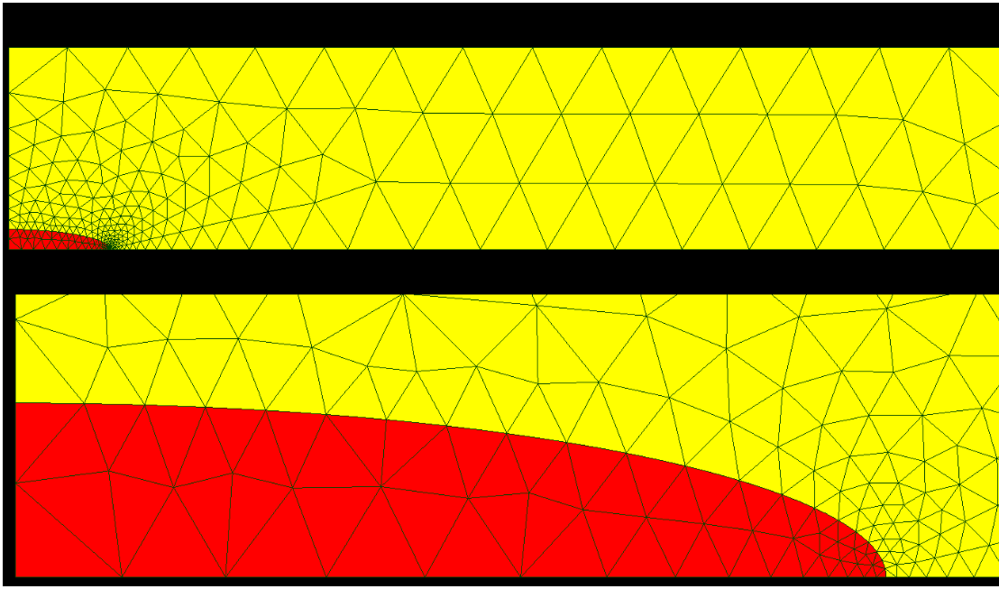
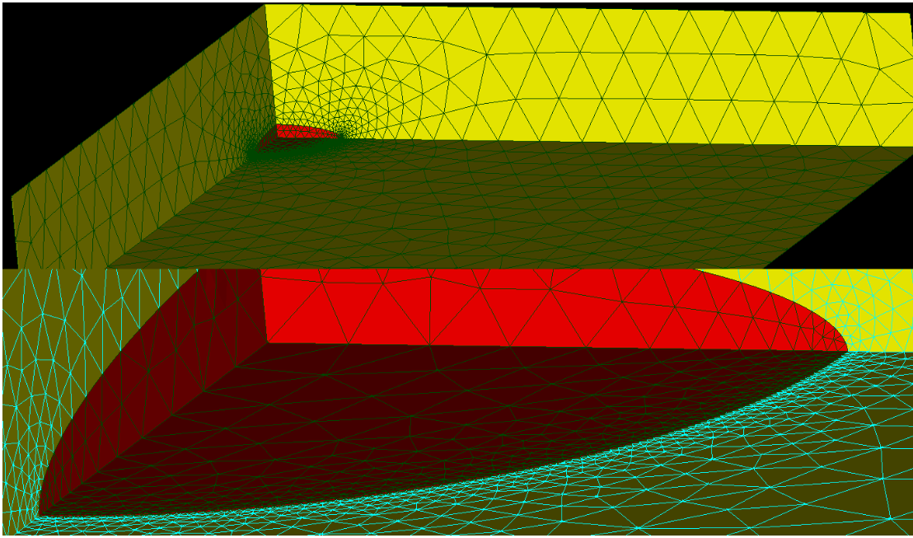
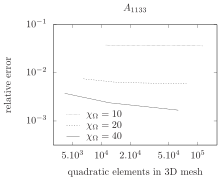
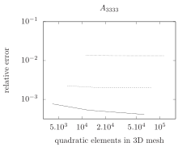
As it is the only ageing linear viscoelastic behaviour available in Code_Aster, the Granger model [52] is adopted for both matrix and inhomogeneity. A constant Poisson ratio is assumed:
\[ \wideeq{\uuuu{L}(t,t') = L_E(t,t') \left[ (1-2\nu) \J + (1+\nu) \K \right]} \tag{62}\]
The uniaxial compliance is here defined with two Kelvin chains, and an arbitrary ageing function \(f_a(t')\):
\[ \wideeq{L_E(t,t') = \frac{1}{E} + f_a(t') \sum_{i=1}^{2} s_i \left(1 - \mathrm{e}^{-\frac{t-t'}{\tau_i}}\right) \quad\textrm{with}\quad f_a(t') = \mathrm{e}^{-\left(\frac{t'}{\tau_{a}}\right)^2}} \tag{63}\]
Arbitrary material parameters are chosen with the inhomogeneity stiffer than the matrix (see Table 2). Bulk and shear compliance functions of both matrix and inhomogeneity phases are plotted in Fig. 3.
| \(\nu\) | \(E\) | \(s_1\) | \(s_2\) | \(\tau_1\) | \(\tau_2\) | \(\tau_a\) | |
|---|---|---|---|---|---|---|---|
| matrix | 0.25 | 1 | 2 | 3 | 2 | 10 | 30 |
| inhomogeneity | 0.15 | 10 | 0.5 | 0.7 | 0.1 | 7 | 15 |
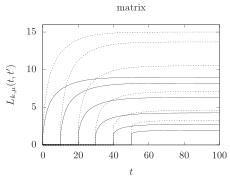
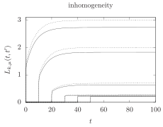
The six independent components of the strain concentration tensor are plotted in Fig. 4 and Fig. 5. The latter are functions of \((t,t')\) and correspond to the uniform strain arising in the inhomogeneity at \(t\) for a unit strain step occurring at \(t'\) at the domain boundary. The semi-analytical result put in evidence in this paper agrees very well with reference FEM computations for all the six components and is able to capture all the details of non-monotonic evolutions.
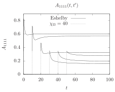
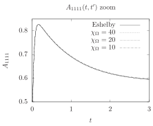
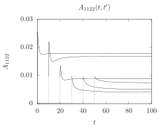
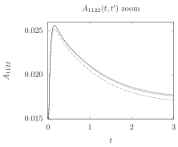
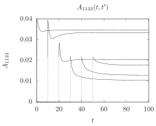
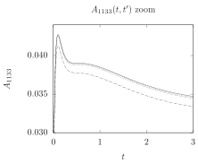
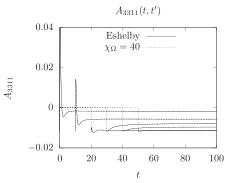
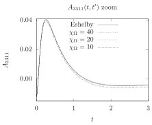
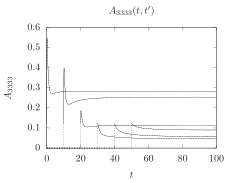
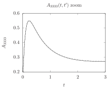
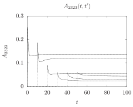
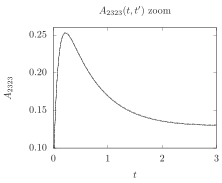
Regarding convergence analysis of FEM results, trends similar to the elastic case are found:
- the relative domain size \(\chi_\Omega\) has a large impact on accuracy (see details in the right part of Fig. 4 and Fig. 5), especially on components \(1122\), \(1133\) and \(3311\),
- the mesh refinement has a much lesser impact on accuracy (Fig. 6), suggesting that ageing linear viscoelastic computations on the fine mesh would not provide significant improvements.
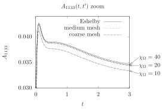
6.3 Performance of the present numerical method based on quadrature in time domain compared to the correspondence principle in the non-ageing case
In order to assess the performance of the numerical procedure based on the trapezoidal rule ([41], [7]) presented in this paper to calculate the viscoelastic concentration tensor of the Eshelby problem, a comparison with an alternative technique based on the correspondence principle (Laplace-Carson) is proposed for the non-ageing case. To this aim, the hypotheses of the concentration problem presented in the previous section devoted to FEM computations are considered again except that the ageing functions in Eq. 63 are replaced by \(1\).
On the one hand, the Laplace-Carson transforms of the elementary behaviours modelled as Kelvin chains have very simple analytical forms. The concentration problem becomes elastic in the Laplace domain and the application of the Gaver-Stehfest algorithm (see [53]) allows to come back to the time domain and to express the six independent components of the concentration tensor at any time. If \(N\) denotes the number of times at which the latter is calculated, it comes that the complexity of this technique is \(\mathcal{O}(N)\) since the number of calls of the elastic problem with the Gaver-Stehfest algorithm at each time is limited.
On the other hand, the procedure developped in the present paper allows to compute the whole history (with respect to the chosen discrete set of times) of the concentration tensor in only one calculation. As shown in the paper the latter requires to inverse lower triangular block matrices of rank \(6N\) which is the most time consuming step of the procedure. It follows that the expected complexity is at best \(\mathcal{O}(N^2)\).
Both techniques have been implemented in Python 2.7 codes and performed on only one core of an Intel i7-3840QM CPU @ 2.80GHz with 8Gb of RAM. The Gaver-Stehfest algorithm has been used with parameter \(M=8\) (summation on \(2 M = 16\), see [53]). It must be precised that both methods perfectly coincide, even for the lowest number of times (\(N = 150\) between \(t = 0\) and \(t = 10\)). The evolutions of the concentration tensor are not presented because they are identical to the ones appearing in right Fig. 4 and Fig. 5. The computing time is plotted against the size of time sampling in Fig. 7. The results are consistent with the expected complexities evoked in the previous paragraphs. In particular, it appears that the method based on the use of the correspondence principle is more efficient. Nevertheless, this method is designed only for non-ageing behaviours whereas the approach proposed in this paper is more general since it can address the ageing case. Moreover, as recalled in introduction, it should be kept in mind that the algorithms allowing to calculate the inverse of the Laplace transform suffer from several shortcomings and should be carefully adapted to the function to inverse.
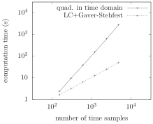
7 Concluding remarks
In this paper, the complete solution to the Eshelby problem of an ellipsoidal inclusion submitted to a uniform polarization history and embedded in an infinite matrix has been derived in the general framework of ageing linear viscoelasticity. In particular it has been proven that the strain state and subsequently the stress state are uniform within the ellipsoid and depend only on time. The structure of the solution is similar to that of the elastic case provided that tensor contractions be replaced by Volterra products: the strain tensor is related to the polarization tensor thanks to a polarization fourth-order Volterra kernel generalizing the elastic Hill polarization tensor. Furthermore, this polarization kernel writes as an integral over the unit sphere of a function depending on the shape of the ellipsoid and of the viscoelastic counterpart of the elastic acoustic tensor of the matrix. In addition, generalizations to ageing linear viscoelasticity of the Eshelby tensor and of the concentration tensor in the case of an ellipsoidal inhomogeneity are provided. Complete analytical expressions of the Hill polarization kernel are determined in the case of an isotropic matrix. The theoretical calculations of the paper are then compared to several published results in order to verify their consistency in particular cases (elasticity, non-ageing viscoelasticity, spherical inclusion). Finally, after recalling an efficient numerical procedure to evaluate Volterra operators, solutions in the case of an ageing spheroidal inhomogeneity in an ageing matrix are very satisfactorily compared to finite element simulations.
The generalization of Eshelby’s results to ageing linear viscoelasticity as presented in this paper combined with the numerical procedure to evaluate Volterra operators opens a new way to tackle upscaling problems of random media made up with general ageing linear viscoelastic constituents of anisotropic shape. Indeed it becomes rather straightforward to implement classical schemes such as the Mori-Tanaka (for an isotropic matrix) or the self-consistent ones (by means of an iterative fixed-point procedure for a macroscopically isotropic material so as to keep an isotropic fictitious matrix at each iteration) in order to estimate the macroscopic properties of heterogeneous materials with ageing linear viscoelastic random microstructure. As in the elastic framework, the particular case of cracks deserves a special attention: it is currently under investigation and is the topic of a paper in preparation.
Acknowledgements
The first author (J.-F. Barth'el'emy) expresses his gratitude to Dr. S. Cariou for fruitful discussions and her encouragement during the course of this work.
The second author (A. Giraud) gratefully acknowledges the support from TAMER European project (Trans-Atlantic Micromechanics Evolving Research Materials containing inhomogeneities of diverse physical properties, shapes and orientations), FP7 Project TAMER IRSES-GA-2013-610547.
8 Proof of the plane-wave expansion Eq. 12
The starting point of the proof is the relationship
\[ \wideeq{\frac{1}{\norm{\x}}=\frac{1}{2\pi}\int_{\norm{\uv{\xi}}=1} \dirac(\uv{\xi}\cdot\uv{x})\ud S_{\uv{\xi}}} \tag{64}\]
obtained by introducing spherical coordinates \((\theta,\varphi)\) of \(\uv{\xi}\) such that \(z=\uv{\xi}\cdot\uv{x}=\norm{\x}\cos\theta\). The change of variable \((\theta,\varphi)\mapsto(z,\varphi)\) allows to write the right hand side of Eq. 64 under the form
\[ \wideeq{\frac{1}{2\pi}\int_{\norm{\uv{\xi}}=1} \dirac(\uv{\xi}\cdot\uv{x})\ud S_{\uv{\xi}} =\int_{\varphi=0}^{2\pi}\frac{\ud\varphi}{2\pi} \int_{z=-\norm{\x}}^{\norm{\x}}\frac{\dirac(z)}{\norm{\x}}\ud z} \tag{65}\]
which leads to the relationship Eq. 64 thanks to the property of the Dirac distribution \(\dirac\) ([44], [45]).
Finally taking the Laplacian with respect to the variable \(\x\) to each side of Eq. 64 and recalling that \(\norm{\uv{\xi}}=1\) and \(\Delta\left({1}/{\norm{\x}}\right)=-4\pi\dirac\) (three-dimensional Poisson formula [44]), the relationship Eq. 12 is retrieved.
9 Change of variable over the unit sphere
This appendix aims at studying the change of variable from the unit sphere to itself \(\uv{\zeta}\mapsto\uv{\xi}=\uu{A}^{-1}\cdot\uv{\zeta} /\norm{\uu{A}^{-1}\cdot\uv{\zeta}}\) with \(\uu{A}\) a symmetric second-order tensor and more specifically at proving the relationship Eq. 29 between the infinitesimal surface elements \(\ud S_{\uv{\xi}}\) and \(\ud S_{\uv{\zeta}}\).
By differentation, the infinitesimal vectors are related by
\[ \wideeq{\ud \uv{\xi}=(\idd-\uv{\xi}\otimes\uv{\xi})\cdot \frac{\uu{A}^{-1}}{\norm{\uu{A}^{-1}\cdot\uv{\zeta}}}\cdot\ud\uv{\zeta}} \tag{66}\]
This corresponds to the application of a transformation gradient \(\uu{A}^{-1}/\norm{\uu{A}^{-1}\cdot\uv{\zeta}}\) followed by an orthogonal projection onto the plane of normal \(\uv{\xi}\). The infinitesimal surface elements are then related by
\[ \wideeq{\ud S_{\uv{\xi}}=\frac{\det{\uu{A}^{-1}}}{\norm{\uu{A}^{-1}\cdot\uv{\zeta}}^2}\, \uv{\xi}\cdot\uu{A}\cdot\uv{\zeta} \ud S_{\uv{\zeta}}} \tag{67}\]
The definition of the unit vectors \(\uv{\xi}\) and \(\uv{\zeta}\) implies
\[ \wideeq{\uv{\xi}\cdot\uu{A}\cdot\uv{\zeta} =\uv{\zeta}\cdot\uu{A}\cdot\uv{\xi} =\frac{\norm{\uv{\zeta}}^2}{\norm{\uu{A}^{-1}\cdot\uv{\zeta}}} =\frac{1}{\norm{\uu{A}^{-1}\cdot\uv{\zeta}}}} \tag{68}\]
which ends the proof by inserting Eq. 68 in Eq. 67. It is worth precising that the following relationships are similarly obtained
\[ \wideeq{\uv{\zeta}=\frac{\uu{A}\cdot\uv{\xi}}{\norm{\uu{A}\cdot\uv{\xi}}} \quad\textrm{and}\quad \ud S_{\uv{\zeta}} =\frac{\det{\uu{A}}}{\norm{\uu{A}\cdot\uv{\xi}}^3}\, \ud S_{\uv{\xi}}} \tag{69}\]
It may be noticed that this change of variable has been considered in [47] and the relationship between surface elements has been obtained by a reasoning on components (see (16.10), (17.09) and (17.10) in [47]).
10 Tensors \(\uuuu{Q}\) and \(\uuuu{R}\) and Newtonian potential
The dependence of \(\uuuu{Q}\) and \(\uuuu{R}\) on \(\uu{A}\) implies that those tensors are orthotropic in the frame \((\uv{e}_1,\uv{e}_2,\uv{e}_3)\) defining the ellipsoid Eq. 6. The non-zero components of \(\uuuu{Q}\) and \(\uuuu{R}\) in this frame are given by (the summation over repeated indices is not applied in what follows)
\[ \wideeq{Q_{iiii}=\frac{3(I_i-\rho_i^2I_{ii})}{2} \quad\forall\, i\in\{1,2,3\}} \tag{70}\]
\[ \wideeq{Q_{iijj}=Q_{ijij}=Q_{ijji}=\frac{I_j-\rho_i^2I_{ij}}{2} =\frac{I_i-\rho_j^2I_{ij}}{2} \quad\forall\, i\neq j\in\{1,2,3\}} \tag{71}\]
and
\[ \wideeq{R_{iiii}=I_i\quad\forall\, i\in\{1,2,3\}} \tag{72}\]
\[ \wideeq{R_{ijij}=R_{ijji}=\frac{I_i+I_j}{4} \quad\forall\, i\neq j\in\{1,2,3\}} \tag{73}\]
The coefficients \(I_i\) and \(I_{ij}\) used in Eq. 70, Eq. 71, Eq. 72 and Eq. 73 are adapted from those provided in [54] and [1] (i.e. differ by a factor of \(4\pi/3\) for \(I_{ij}\) with \(i\neq j\) and by \(4\pi\) for the others). Assuming that \(\rho_1\geq \rho_2\geq \rho_3\) without loss of generality and renaming \(\rho_1=a\), \(\rho_2=b\) and \(\rho_3=c\) when useful for a better readability of the following formulas, different cases are considered
if \(a > b > c\)
\[ \wideeq{I_1=\frac{a\,b\,c}{(a^2-b^2)\,\sqrt{a^2-c^2}}\, \left(\mathcal{F}-\mathcal{E}\right)} \tag{74}\]
\[ \wideeq{I_3=\frac{a\,b\,c}{(b^2-c^2)\,\sqrt{a^2-c^2}}\, \left(\frac{b\,\sqrt{a^2-c^2}}{a\,c}- \mathcal{E}\right)} \tag{75}\]
\[ \wideeq{I_2=1-I_1-I_3} \tag{76}\]
\[ \wideeq{\begin{aligned} I_{ij}&=&\frac{I_j-I_i}{\rho_i^2-\rho_j^2}\quad\forall\, i\neq j\in\{1,2,3\}\\ I_{ii}&=&\frac{1}{3}\left( \frac{1}{\rho_i^2}- \sum_{j\neq i}I_{ij} \right) \quad\forall\, i\in\{1,2,3\} \end{aligned}} \tag{77}\]
where \(\mathcal{F}=\mathcal{F}(\theta,\kappa)\) and \(\mathcal{E}=\mathcal{E}(\theta,\kappa)\) are respectively the elliptic integrals of the first and second kinds of amplitude and parameter
\[ \wideeq{\theta=\arcsin{\sqrt{1-\frac{c^2}{a^2}}} \quad;\quad \kappa=\sqrt{\frac{a^2-b^2}{a^2-c^2}}} \tag{78}\]
if \(a > b = c\) (prolate spheroid)
\[ \wideeq{I_2=I_3=a\, \frac{a\,\sqrt{a^2-c^2}-c^2\,\arccosh{(a/c)}} {2\left(a^2-c^2\right)^{3/2}}} \tag{79}\]
\[ \wideeq{I_1=1-2\,I_3} \tag{80}\]
\[ \wideeq{I_{1i}=I_{i1}=\frac{I_i-I_1}{a^2-\rho_i^2}\quad \forall\, i\in\{2,3\}} \tag{81}\]
\[ \wideeq{I_{ij}=\frac{1}{4} \left(\frac{1}{c^2}-I_{31} \right) \quad\forall\, i,j\in\{2,3\}} \tag{82}\]
\[ \wideeq{I_{11}=\frac{1}{3} \left(\frac{1}{a^2}-2\,I_{31} \right)} \tag{83}\]
if \(a = b > c\) (oblate spheroid)
\[ \wideeq{I_1=I_2=c\, \frac{a^2\,\arccos{(c/a)}-c\,\sqrt{a^2-c^2}} {2\left(a^2-c^2\right)^{3/2}}} \tag{84}\]
\[ \wideeq{I_3=1-2\,I_1} \tag{85}\]
\[ \wideeq{I_{3i}=I_{i3}=\frac{I_3-I_i}{\rho_i^2-c^2}\quad \forall\, i\in\{1,2\}} \tag{86}\]
\[ \wideeq{I_{ij}=\frac{1}{4} \left(\frac{1}{a^2}-I_{31} \right) \quad\forall\, i,j\in\{1,2\}} \tag{87}\]
\[ \wideeq{I_{33}=\frac{1}{3} \left(\frac{1}{c^2}-2\,I_{31} \right)} \tag{88}\]
if \(a = b = c\) (sphere)
\[ \wideeq{I_1=I_2=I_3=\frac{1}{3}} \tag{89}\]
\[ \wideeq{I_{ij}=\frac{1}{5\,a^2}\quad\forall\, i,j\in\{1,2,3\}} \tag{90}\]
11 Proof of equality between Eq. 57 and the expression of \(A^K\) provided in [7]
The expression of \(A^K\) provided in [7] writes with the notations of the present paper
\[ \wideeq{A^K=\heaviside+2(2\heaviside+3D)\volt \invvolt{\left(2\mu^{\mathcal{E}}\volt(2\heaviside+3D) +\mu\volt(6\heaviside-D) \right)} \volt(\mu-\mu^{\mathcal{E}})} \tag{91}\]
with
\[ \wideeq{D=\frac{2}{3}\invvolt{(k+\mu)}\volt\mu} \tag{92}\]
Replacing
\[ \wideeq{2\heaviside+3D=2\invvolt{(k+\mu)}\volt(k+2\mu)} \tag{93}\]
and
\[ \wideeq{6\heaviside-D=\frac{2}{3}\invvolt{(k+\mu)}\volt(9k+8\mu)} \tag{94}\]
in Eq. 91 yields
\[ \wideeq{A^K=\heaviside+6 \invvolt{\left(6\mu^{\mathcal{E}} +M \right)} \volt(\mu-\mu^{\mathcal{E}})} \tag{95}\]
with
\[ \wideeq{M=\mu\volt\invvolt{(k+\mu)}\volt(9k+8\mu) \volt\invvolt{(k+2\mu)}\volt(k+\mu)} \tag{96}\]
The terms appearing in \(M\) in Eq. 96 do not commute but \(M\) advantageously rewrites with respect to \(\rho=k\volt\invvolt{\mu}\)
\[ \wideeq{M=\invvolt{(\rho+\heaviside)} \volt(9\rho+8\heaviside) \volt\invvolt{(\rho+2\heaviside)} \volt(\rho+\heaviside) \volt\mu} \tag{97}\]
Considering now that \(\rho\), \(\heaviside\), linear combinations of the latter as well as their inverses commute, Eq. 97 becomes
\[ \wideeq{M=\invvolt{(\rho+2\heaviside)} \volt(9\rho+8\heaviside) \volt\mu =\mu\volt\invvolt{(k+2\mu)} \volt(9k+8\mu)} \tag{98}\]
The last expression of \(M\) in Eq. 98 is then used in Eq. 95 to end the proof
\[ \wideeq{A^K =\heaviside+6 \invvolt{\left(6\mu^{\mathcal{E}} +\mu\volt\invvolt{(k+2\mu)} \volt(9k+8\mu) \right)} \volt(\mu-\mu^{\mathcal{E}})} \tag{99}\]
\[ \wideeq{=\heaviside+6 \invvolt{\left( 9k+8\mu +6(k+2\mu)\volt\invvolt{\mu} \volt\mu^{\mathcal{E}} \right)}\volt (k+2\mu)\volt\invvolt{\mu} \volt(\mu-\mu^{\mathcal{E}})} \tag{100}\]
\[ \wideeq{= 5\,\invvolt{\left(9\,k+8\,\mu+6(k+2\,\mu)\volt\invvolt{\mu}\volt \mu^{\mathcal{E}}\right)}\volt(3\,k+4\,\mu)} \tag{101}\]